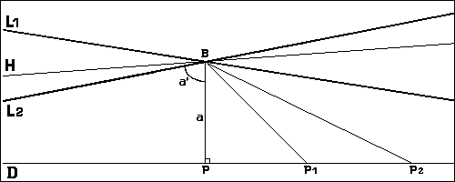
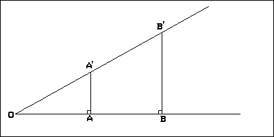
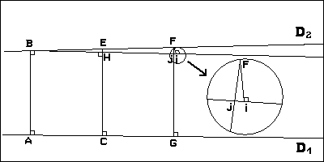
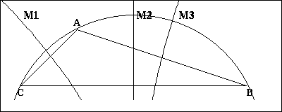

Home André Brouty
Home André Brouty

Lobatchevsky est allé très loin dans la construction de la nouvelle géométrie avec la conviction que cette géométrie est parfaitement cohérente et autonome. Il faudrait parler du Hongrois J. Bolay, contemporain de Lobatchevsky, qui a indépendant élaboré une géométrie analogue, mais ce dernier n'a publié qu'un petit opuscule en latin de ses travaux alors que Lobatchevsky a beaucoup publié en russe allemand et français et a démontré ses résultats plusieurs fois sous des formes différentes afin de convaincre ses contemporains avec difficulté. Il ne faut pas non plus oublier le grand Gauss, qui le premier, dès 1795 selon lui, était convaincu de l'existence mathématique des géométries non euclidienne. Malheureusement il n'a rien publié la dessus et n'en parle que dans sa correspondance.
examinons la figure 3 ci-dessous.
 Figure 3
Nous avons une droite D, un point B extérieur et la perpendiculaire BP à la droite D. Les triangles (PBP1), (PBP2), ...., (PBPn) ont tous la sommes de leurs angles inférieure à 180 degrés. Faisons tendre le point Pn vers l'infini sur la droite D, l'angle BPnP tend vers zéro et la droite BPn tend vers la droite limite L1. L'angle fait par les deux droites BP et L1 est strictement inférieure à 90 degrés. La droite L1 est une parallèle à D. Par symétrie de la figure la droite L2 est aussi une parallèle à D. La doite H comprise entre les deux l'est également. On verra plus loin l'explication de cette dénomination. Avec ces définitions il y deux parallèles à une droite et si on se limite à une direction il n'y a plus qu'une seule parallèle à une droite au sens de Lobatchevsky.
Lobatchevsky appelle parallèle les droites L1 et L2 et divergente les droites de type H. On verra plus loin le pourquoi de ces définitions.
Ainsi avec ces définitions, si on se limite à une direction il n'y a qu'une seule parallèle a une droite passant par un point donné en analogie avec la géométrie classique et on montre de plus le résultat suivant:
Le parallélisme au sens de Lobatchevsky est une relation d'équivalence comme en géométrie euclidienne.
En examinant à nouveau la figure 3 le triangle formé par le coté BP et les droites D et L2 est un triangle à un angle nul, appelé par Lobatchevsky triangle impropre. Si le point B se rapproche de P on obtiendra un triangle impropre compris dans le précedent et dont le déficit est plus petit. L'angle a' qui est l'angle limite (angle de parallélisme associé à B et à D) n'est pas constant. Cet angle est étroitement associé à la distance BP notée a. Lobatchevsky montre qu'il est inversement proportionnel à cette distance et qu'il varie de 90 degrés à 0 quand a varie de 0 à l'infini.
Considérons maintenant la figure 4 ci-dessous
 Figure 4
où nous avons AA' et BB' perpendiculaires à une droite. A cause du déficit dans les triangles, le plus grand triangle ayant le plus grand déficit, l'angle OA'A est supérieur à l'angle OB'B, de plus si on suppose OA = AB, on montre qu'on a OA' < A'B' et OA/OA' < OB/OB' contrairement à la géométrie euclidienne où on a l'égalité. Le théorème de Thalès est faux, et les relations trigonométriques classsiques n'ont plus des sens ici. Il va falloir recréer une nouvelle trigonométrie, nous verrons cela plus loin.
Nous pouvons examiner ce que devient le théorème de Pythagore
avec ce type d'inégalité. On montre aisément la formule
suivante:
| OA'^2 > OA^2 + AA'^2 |
Ensuite Lobatchevsky montre divers résultats que nous allons passer
en revue rapidement.
Soit une perpendiculaire commune à deux droites comme sur la figure 5
 Figure 5
Sur cette figure soient les droites D1et D2 qui ont comme
perpendiculaire commune la droite AB, soient de plus CE
et GF deux autres perpendiculaires à la droite D1 .
Les angles BEC et BFG sont aigus car la somme des angles
d'un quadrilatère est inférieure à 360 degrés et
les trois autres faisant 90 degrés par construction. Le point H est le
pied de la perpendiculaire abaissée de B sur la droite CE. BH coupe
GF au point I. Du point F abaissons la perpendiculaire FI sur la droite
BH qui coupe GF en J (le cercle sur la droite de la figure représente
un agrandissement de ce qui se passe autour du point F).
Nous avons par construction la relation suivante sur les
longueurs: FI < FJ et donc BF/BE < GI/FH < GJ/FH d'ou le résultat:
GJ > (BF.EH)/BE
Le point E étant fixé quand F s'éloigne vers l'infini
sur D2 la longueur BG croit indéfiniment ainsi que la longueur
FJ, d'ou ce résultat surprenant en géométrie non euclidienne:
| 4ème résultat en géométrie de Lobatchevsky |
|---|
| Deux droites du plan ayant une perpendiculaire commune s'écartent indéfiniment lorsque l'on s'éloigne de la perpendiculaire commune et cette perpendiculaire commune et la plus courte distance entre ces droites. |
On en déduit ensuite que les parallèles (au send définit
plus haut) se rapprochent asymptotiquement dans le sens du parallélisme
et s'en éloigne indéfiniment dans l'autre sens.
On comprend mieux maintenant le vocabulaire de Lobatchevsky et pourquoi
les droites H de la figure 3 sont appelées
divergentes et sont bien distinctes des deux droites limites appelées, elles,
parallèles.
Voyons maintenant quelques autres résultats de cette géométrie
sans détailler les démonstrations que l'on trouvera dans .......
En particulier on a la propriété suivante qui est aussi vraie
en géométrie euclidienne et qui conforta Lobatchevsky dans
la justesse de ses définitions:
Si deux droites sont parallèles alors l'intersection des plans qui les contiennent, quand elle existe, est une droite parallèle aux deux autres.
La géométrie dans l'espace est utilisée pour obtenir des résultats de géométrie plane et en particulier la valeur de l'angle de parallélisme. Mais d'abord un resultat fondamental pour la suite de l'exposé:
| 5ème résultat en géométrie de Lobatchevsky(fondamental) |
|---|
| Si trois plans se coupent suivant trois parallèles alors la somme de leurs angles dièdres est égale à 180 degrés. |
Ce résultat est fondamental car il va permettre le calcul de l'angle limite et toute la trigronométrie associée.
Considérons maintenant un triangle dont deux médiatrices sont parallèles (figure 6). Alors on montre dans ce cas que la troisième médiatrice est aussi parallèle aux deux autres.
 Figure 6
En géométrie euclidienne on obtient dans ce cas un triangle dégénéré où les trois cotés sont alignés. Mais en géométrie de Lobatchevsky il en est autrement; en effet si les trois sommets du triangle étaient alignés les médiatrices auraient une perpendiculaire commune et elles ne seraient pas parallèles mais divergentes d'après ce qu'on a vu plus haut. Ainsi on a les trois cotés de ce triangle qui sont sur un cercle dont le centre est à l'infini. Ce cercle bizarre n'est pas une droite mais une courbe particulière qu'on appelle horocycle. Cette courbe joue un rôle particulier dans cette géométrie. On peut la présenter comme une courbe coupant orthogonalement un faisceau de parallèles. Chaque droite du faisceau est un axe de symétrie pour l'horocycle. Si nous faisons tourner un horocycle autour d'un de ses axes de symétrie dans l'espace, nous obtenons une surface de révolution qu'on appelle une horosphère. On peut en voir un échantillon sur la figure 7.
On y voit trois parallèles du faisceau la coupant en trois points A, B et C. Les trois plans contenant les trois droites du faisceau coupent cette horosphère suivant les trois courbes horosphériques AB, AC, BC. Ces trois courbes forment un triangle sur l'horosphère etla somme des angles de ce triangle est éagle à la somme des angles du trièdre formé par les trois plans. Comme nous avons vu que la somme des angles d'un tel trièdre est égale à 180 degrés, on déduit le résultat suivant:
| 6ème résultat en géométrie de Lobatchevsky(fondamental) |
|---|
| La surface de l'horosphère est régie par la géométrie euclidienne. |
On obtient ainsi le premier modèle non euclidien de géométrie euclidienne.
L'horocycle et l'horosphère sont des objets nouveaux et étranges de cette géométrie qui non pas d'équivalent en géométrie euclidienne. Il existe aussi une autre figure nouvelle qui est la courbe équidistante d'une droite donnée. L'ensemble des points situés à égale distance d'une droite, est une droite parallèle en géométrie euclidienne, mais en géométrie de Lobatchevsky il en est autrement. En effet on a vu que les parallèles sont asymptotiques l'une de l'autre dans une direction et que les divergentes n'ont qu'une perpendiculaire commune et s'éloignent indfiniment dans les deux directions. Il ne peut donc s'agire que d'une courbe qu'on apelle hypercycle. Si on fait tourner cette courbe autour d'une de ses perpendiculaires on obtien une surface appelé hypersphère. On montre facilement que la géométrie de cette surface est la géométrie de Lobatchevsky.
L'horocycle et l'horosphère vont jouer un rôle important dans la suite de l'exposé on peut en effet les considérer comme les objets euclidiens de cette géométrie et les utiliser pour développer la mesure des longueurs, aires et volumes ainsi que la nouvelle trigonométrie associé à cet espace. C'est l'objet du chapitre suivant.
Home André Brouty